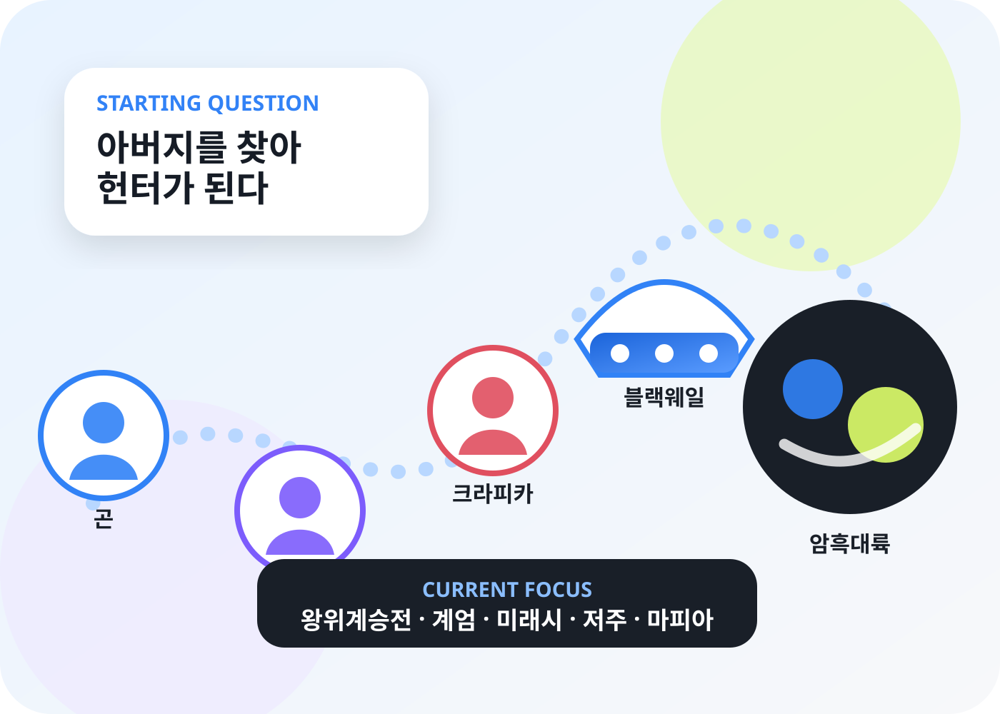

ONE-PAGE EXECUTIVE BRIEF · EXECUTIVE BRIEF
HUNTER×HUNTER를 한 장으로 이해하는 전체 지도
이 작품은 “아버지를 찾는 소년의 모험”에서 출발하지만, 실제 핵심은 욕망·규칙·관계가 힘을 어떻게 바꾸는지를 추적하는 장기 서사다. 2026년 8월 27일 기준 최신 공개분은 제418화이며, 이야기는 암흑대륙으로 향하는 배 안의 왕위계승전에서 가장 복잡한 정치·넨 전쟁으로 확장되어 있다.
001OF 100

배틀의 승패보다 누가 어떤 조건을 걸고, 무엇을 포기하며, 상대의 정보 비대칭을 어떻게 이용하는지가 더 중요하다.
418화최신 공개분2026-08-23 VIZ 기준
39권최신 단행본2026-07-03 일본 발매
8개대형 서사 구간시험부터 왕위계승전까지
100쪽본 설정집A4 인쇄 페이지 단위
01시험친구와 규칙을 배움
02가문·수련자유와 통제의 충돌
03요크신복수와 집단 정체성
04그리드 아일랜드게임화된 넨 교육
05키메라 앤트인간성과 괴물성의 역전
06회장 선거치유·정치·가족
07암흑대륙 준비세계 규모의 확장
08왕위계승전밀실 정치·저주·마피아
지금의 주인공 축
크라피카가 와블 왕자 보호와 동포의 눈 회수를 동시에 수행한다. 곤·키르아는 414화에서 다시 현재 시점에 등장하지만, 본류는 여전히 블랙웨일호다.
지금의 최대 위험
벤자민의 계엄·감염 시한, 체리드니히의 미래시, 비욘드의 자식과 저주, 마피아 항쟁, 히소카 대 환영여단이 같은 배에서 충돌한다.
독자가 잡아야 할 기준
① 누가 무엇을 알고 있는가 ② 능력의 발동 조건 ③ 남은 시간 ④ 법·계약·혈통의 정의 ⑤ 죽은 뒤에도 남는 넨을 계속 추적한다.